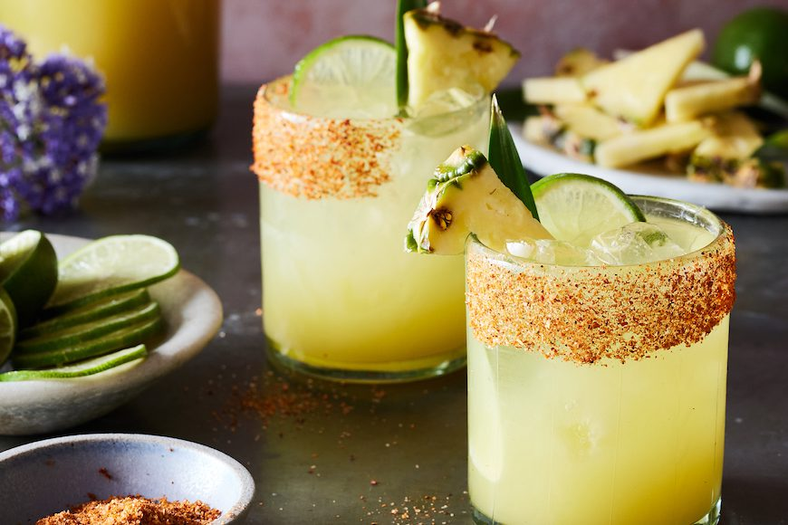

Pineapple Margarita

Description
The addition of pineapple juice gives a traditional margarita a tropical twist! You
can use Tajin instead of coarse salt to rim the glass. Use a good quality tequila
for best results.
Ingredients
- 2 cups ice, or as needed
- 3 fluid ounces pineapple juice
- 2 fluid ounces silver tequila
- ¾ fluid ounce triple sec
- ¾ fluid ounce freshly squeezed lime juice
- 1 tablespoon coarse salt, or as needed
- 2 lime wedges
- pineapple wedge for garnish (optional)
Steps
- Fill a cocktail shaker half-full with ice. Add pineapple juice, tequila, triple sec,
and lime juice to the shaker. Seal and shake vigorously until outside is frosted,
10 to 15 seconds.
- Sprinkle salt onto a plate. Moisten the rim of a glass with a lime wedge. Press the
moistened rim into the salt. Fill glass with ice.
- Strain margarita into the glass and garnish with pineapple and lime wedge, if
desired.
Return Homepage